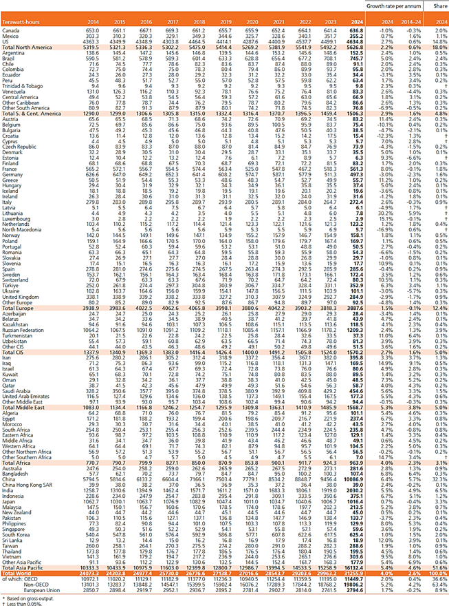
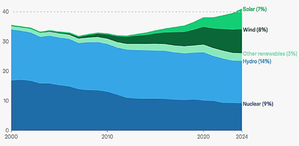
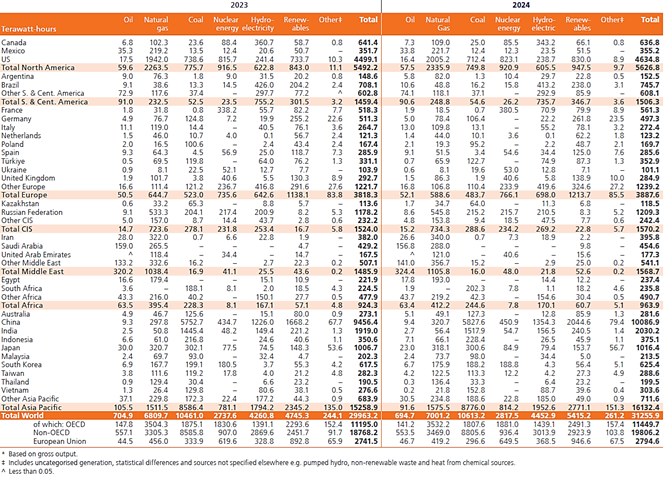

CAPÍTULO 2 MATRIZ PRODUÇÃO E CONSUMO DE ENERGIA ELÉTRICA A NÍVEL MUNDIAL
Em 2024 a geração de eletricidade no mundo todo aumentou 4,0 % atingindo 31255,9 TWh. Na América Central e do Sul a demanda se incrementou 2,9 %, enquanto que na Europa e nos Estados Unidos incrementou-se um 1,5% e 2,7% respectivamente. A diferença de 2023 todas as regiões tiveram um incremento da demanda. Vide Figura 2.1. O principal motivo pelo qual o crescimento da demanda por eletricidade foi elevado em 2024 em comparação com 2023 foi o aumento no uso de ar-condicionado durante as ondas de calor. Isso foi responsável por quase todo o pequeno aumento na geração fóssil. [6]. Tecnologias em expansão como IA, data centers, veículos elétricos e bombas de calor já estão contribuindo para o aumento da demanda global.

Figura 2.1: Geração de eletricidade no mundo em TWh. [7]
As energias renováveis ultrapassaram 40% da geração global de eletricidade em 2024, impulsionada pelo crescimento recorde das energias renováveis, especialmente a solar. (Vide Figura 2.2). A energia solar tornou-se o motor da transição energética global, com a geração solar e as instalações de capacidade estabelecendo novos recordes em 2024, com um aumento de 474 TWh, atingindo um novo recorde de 2.131 TWh (+29%). A participação da energia solar na matriz elétrica global atingiu 6,9%, frente a 5,6% em 2023. A geração eólica global atingiu um novo recorde de 2.494 TWh em 2024, um aumento de 182 TWh (+7,9%) em relação a 2023. A participação da energia eólica na matriz elétrica global atingiu 8,1%, acima dos 7,8% em 2023. [6]. A geração hidrelétrica total atingiu o recorde histórico de 4.416 TWh em 2024. O recorde anterior foi registrado em 2020, seguido por uma queda na geração total em 2021, um pequeno aumento em 2022 e, novamente, um declínio em 2023. [6] [7]

Figura 2.2: Participação na geração global de eletricidade (%). [6]
Sobre as fontes não renováveis, o carvão continua sendo a maior fonte individual de geração de eletricidade, com um incremento de 1,4% (+149 TWh) em 2024, atingindo um novo recorde. A participação em 2024 foi de 34%. Esse aumento foi ligeiramente inferior ao aumento registrado em 2023 (+190 TWh, +1,9%). O gás natural aumentou, atingindo um recorde de 6.788 TWh em 2024. Apesar disso, sua participação de mercado caiu pelo quarto ano consecutivo, com a geração crescendo mais lentamente do que a demanda por eletricidade. Sua participação atingiu o pico de 24% em 2020 e caiu para 22% em 2024, o menor nível desde 2014. A geração nuclear global total em 2024 foi de 2.768 TWh, ela representou 9% da matriz elétrica global em 2024, o menor valor em mais de 45 anos. Sua participação tem apresentado declínios consistentes na última década [6] [7].
A Figura 2.3 mostra a distribuição da geração regional de eletricidade com base em diferentes recursos.
- O gás natural predomina na América do Norte, África, CEI (Comunidade de Estados Independentes) e Oriente Médio.
- As Américas Central e do Sul obtêm aproximadamente metade de sua energia de fontes hidrelétricas.
- Na Ásia, o carvão predomina, respondendo por mais da metade da geração de eletricidade.
- Na Europa, as energias renováveis continuam sendo a fonte que mais gerou energia, seguida pela energia nuclear.
Pode-se observar que em 2024, o carvão é a fonte dominante de geração de eletricidade em todo o mundo com 33,9%, seguido pelo Gás Natural com 22,3% e pelas energias renováveis com 17,32%.

Figura 2.3: Geração de eletricidade em função do tipo de fonte em TWh. [7]